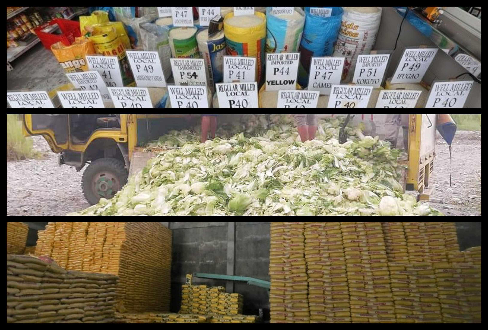

You picked up the latest edition of the newspaper
After the pandemic-driven recession in 2020, the country is still experiencing economic and food crisis.

Despite being known as an agricultural country, the Philippines struggle when it comes to food security. In 2023, there are reports of President Marcos' declaring price ceiling adding insecurity to farmers. Subsequently, this policy adds pressure in producing food crops and in selling them in the market.
In line with this, cases of vegetables, such as cabbages, being wasted or sold at a loss due to oversupply in the food supply chain increases. This is food that could be bought by the government and reallocated to starving families.
With the ever increasing population growth and unpredictable crises, the capacity to produce food for the population is hampered. Sustainable agriculture and food production is needed now more than ever.
You started forming hypotheses and solution
NULL HYPOTHESIS: Economic factors does not have any correlation with food crop productivity in the several regions of the country
ALTERNATIVE HYPOTHESIS: Food crops production in the country are correlated by some economic conditions
ACTION PLAN: Analyze and interpret several economic metrics and their relation to different food crops production
You left the store to continue your journey.